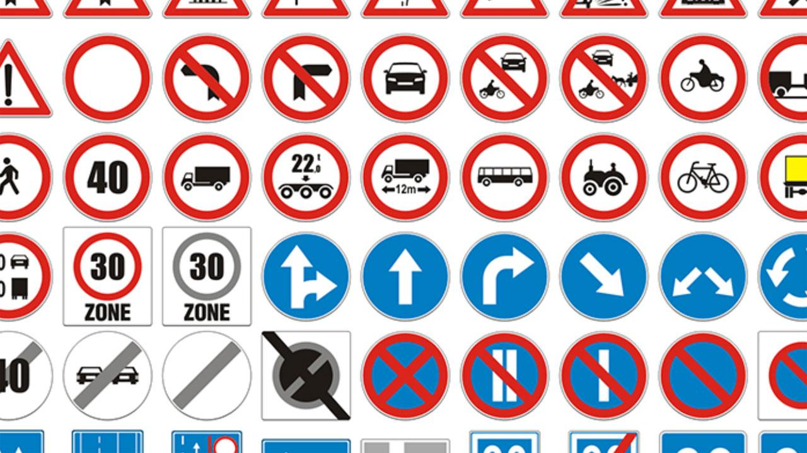
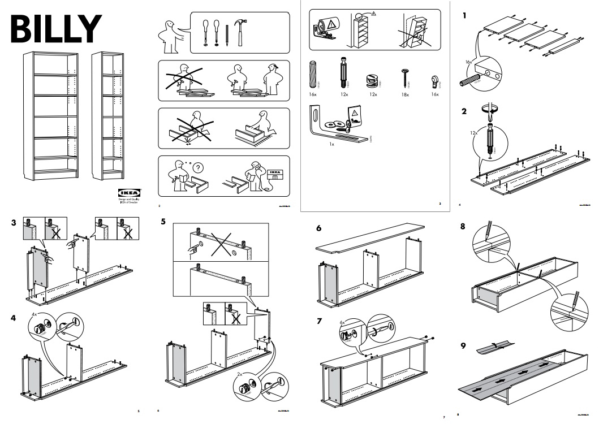

1. Introducción
FUNDAMENTOS DE LA PROGRAMACIÓN | CENTRO | 2021-2
Diego Montesinos

Siendo un diseñador...
¿Porque aprender a programar?
¿Que cosas puedo lograr con código?
El software ha influenciado todos los aspectos de las artes visuales. Y especialmente la animación.
En cada uno de los procesos de producción y postproducción, el uso de la computadora se ha vuelto fundamental.
Raven Kwok - GreatnessOFFF Mexico 2015 Opening Titles
Pero, además de las evidentes aplicaciones que podemos mencionar. El software amplía la capacidad de creación de narrativas y experiencias que difícilmente se podrían sin código.
Elastic ManBOX by GMUNK
OMM Experience
¿Qué es significa programar?
Si estamos aquí para aprender los fundamentos de la programación, nos aseguraremos de entender qué es lo que aprenderemos.
Ejemplo de Códigos
- Morse
- Código de barras
- Código civil
- El ADN

Código
Es un conjunto de elementos pertenecientes a un lenguaje, útiles para intercambiar información.
- Debe existir un emisor y un receptor.
- Ambos deben poder codificar y decodificar el mensaje.
Nos interesan los códigos que transmiten un tipo de idea en específico:
INSTRUCCIONES
Algoritmo
Es una lista ordenada de pasos cuyo propósito es hacer algo, y debe ser entendible para aquel ente que lo hará (o ejecutaran).
- Debe ser finito.
- Esta escrito en lenguaje.
Ejemplos de algoritmos
Algoritmos Estilo Ikea
¿Qué es programar?
Simple, programar es escribir algoritmos en un lenguaje de programación.
Asi mismo, un Lenguaje de Programación, es un lenguaje formal
que definido por una sintaxis y una semantica (igual que el Español).